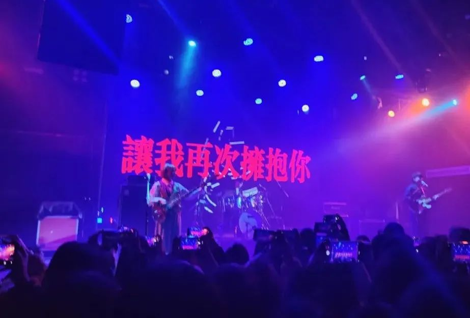

本文是张衔瑜第220篇推文
共计1644个字，7张图
过年之前微信提醒我说可以订制公众号主体的封面红包，但是我没去弄。虽然有时候也会羡慕一下能直接拿Canvas笔直接数码设计出来，但是想象那使用频率放在我这里也是吃灰。就好比我觉得长沙有一家做抄手的很好吃，而且去那边也没有超过一个小时，但回国以来也没有去过一次。
没有明说的就不明白吧？
说明白的就以为还有别的意思，然后把明白的都忘了吧？
2022年第一场、牛年最后一场live去听的温和治疗MildCure
现场拉胯倒也没有，结冰水那个才是真的拉胯怀疑结冰水在录音室里给调音师塞了一波超级加倍。温和治疗就是觉得他们很努力，和正常现场巡演的乐队一样卖力演出，没有假唱，有真的蹦跶。但是底下没有觉得很热烈。
当然也很好解释。一支乐队，有受众，跟ta的歌或者跟ta的乐手有关。温和治疗的歌本就没有往heavy or doom去发展，自然也不能用对梅卡德尔的期待来看他们。所以就是蹦完了一场，天要下雨、我要蹦迪这种发展模式。

除夕晚上吃完团年饭，送人回来，我没上楼。在大院里看别人家大大小小玩鞭炮。好像是三四波不同的人，在院子里的空地上摆成圈。我站在旁边看，没有鞭炮也没有强制社交要去蹭两根玩，所以看得也很安静。
不用非得凑进去，我觉得我看得也很开心。因为别的事情都挺糟糕的。比如开车回来的路上，开电台听实时，是《广东话》的那段相声。本来想正好我在开车，捡个语言类节目，听到一半这是什么卖弄东西，还不如我琢磨琢磨自己平常说的长沙话里像“甚而至于”这样词语的转调方式与句子组成。所以看看别人摆点像过年的样子的内容，就挺不错，不然就一直觉得很多层面上的不对劲。
不发出来，写在备忘录里。
看书也不是一个好的选择。吃多了之后看书就容易困。即算是开始看书了，半小时之后，也会陷入一种疲劳。尤其是看理想国译丛里第三帝国的三部曲，我看完第一本了从魏玛共和国这些时期到纳粹上台，现在第二本在建集中营，不过犹太人还没有单独列出，二战也还没有开始。
书巨厚，有一只五六斤重的猪肘那么大。书厚还在其次，网络小说看了个标题我就知道这一章在说什么，扫几个关键字我就开始看下一章。但是这个不行，这个德国猪肘书里面，参考文献就有两个肘子油皮那么厚。可见得剩下的部分有多么严苛扎实，而这种有连贯逻辑和硬核前后文联系的书就几乎是参考文献级别的存在了，又再回头来证明其∑狸性。
看完第一本和看这一本的感觉是一样的：人类不会从历史中学到些什么东西。可以提出假设呀：比如人类不读历史书、人类读不懂历史书、人类读了历史就忘了。反正都是些伤心玩意儿，改又改不了，看了干嘛。还不如写代码去黑进美联储，打上一行大字：“你工人爷爷来了。”
分享一首好听的歌，每逢佳节贝斯轻
Motorama– Horse Anchor
食品科学说，饭会发馊，但有的酒能醇香。认知科学说，我们会加工自己的记忆，屎上雕花。天天这么个说，那么个说，说得人也怪烦。个个manufacture这么厉害怪不得制造业能飞速发展
吃片儿药呀
去露营🏕️就在河边的滩涂上草丛间，带走垃圾
下雪天去书店安定。书店没开门，不安定
一家开了门。安定
去买本书。安定

去放烟花，要在河边的步道上，用火光看书然后带走垃圾
我就疑惑了怎么早上总有人在放鞭炮、总是迎财神
正月初二，迎财神
正月初五，迎财神
正月初八，迎财神
搁这儿财神菩萨天天来，贰伍捌作将夸下盘口在这里打一处豪华七巧对
封建迷信要不得。正月初八我就不做这些奇怪的事情。随便走到一家买包点的店里面去买一个红糖发糕就完事。至于为什么不买一对，因为这本就是从大块上切下来的。那么人们可以一直切下去，切一个泰勒级数给你看看像拼图，只是没有那么好的刀功罢辽
骂骂咧咧
一看还有那么多要做的事，就觉得睡觉算了。数就不数了，每个人都觉得自己的事情最多，人不同时期的耐受力亦是迥异。初三初四吃了肘子，除夕初一初二都没吃到肘子。初二那天我都在备忘的地方写总结这次过年就两字：失望。鞭炮没有、肘子不见，春晚唯独想看的青绿腰舞蹈也坐在电视机前都被岔开了。没法同时面对很多事情。
当时补也没有补，后来想的办法。发生了再怪诞的事情，现在在我看来也都是好呀好呀不错很有创意。新年有创意